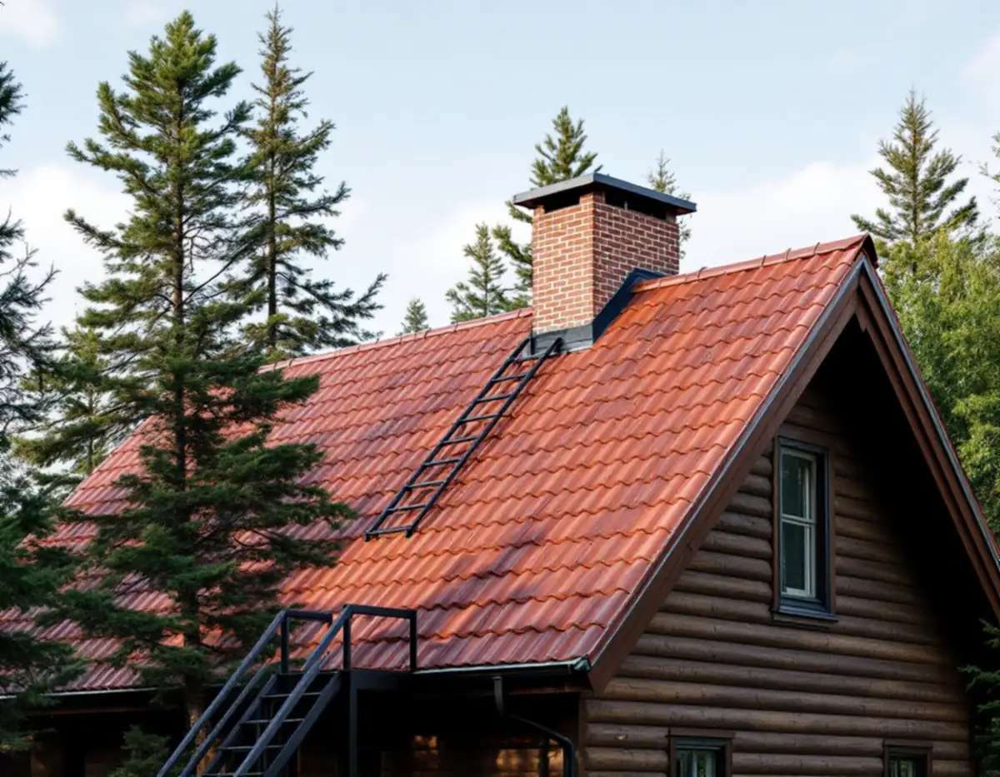
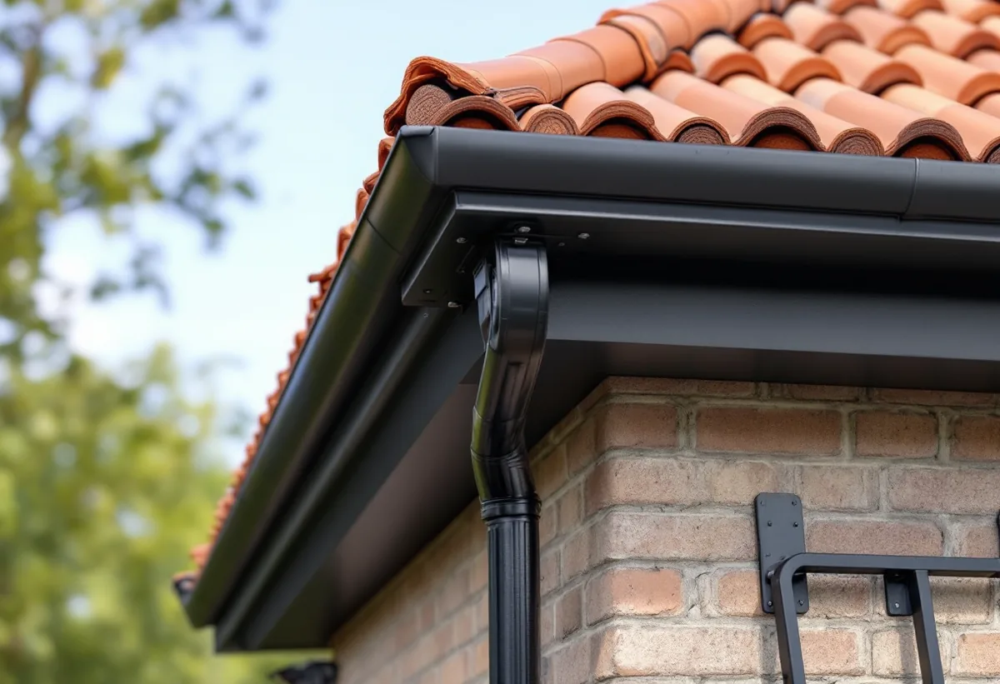
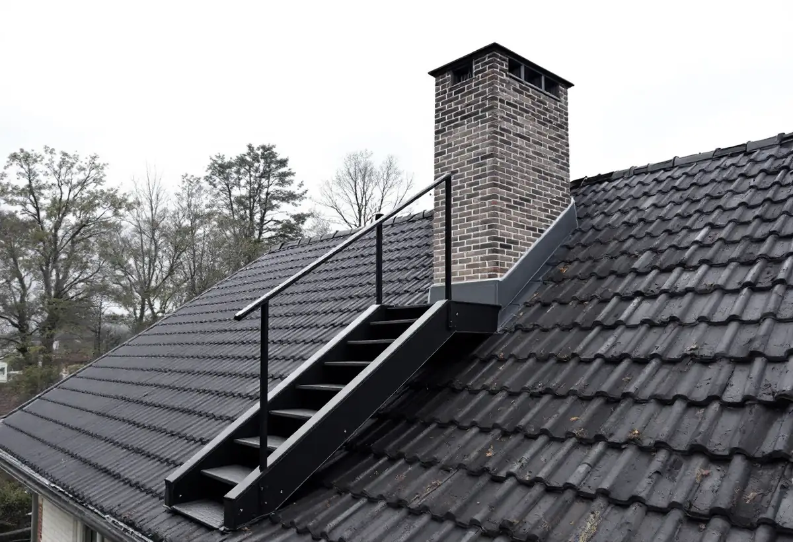

Platsbesök
Vi mäter fasadhöjd och taklutning och tittar på skorstenen och dagens taksäkerhet.

Ett nytt tak ska inte bara hålla tätt.
Skicka gärna en bild på taket.
Något blev fel. Kontrollera uppgifterna eller ring 08 12 410 276.
Pris: från 1 400 kr/m² inkl. material, före ROT-avdrag
Vi tittar på jobbet på plats innan du får offert.
Du ser vad som ingår och vad det kostar.
Vi drar av ROT direkt och sköter ansökan.
Geal Entreprenad AB, Bromma. Org.nr 559303-7566.

Har huset en eldstad ska sotaren och brandskyddskontrollanten också kunna ta sig upp på ett säkert sätt. Geal Entreprenad AB byter tak i hela Tyresö och planerar taksäkerheten samtidigt som det nya taket läggs.
Tyresö ingår i Södertörns brandförsvarsförbund, som sköter sotning och brandskyddskontroll åt kommunen. Förbundet kallar taksäkerheten en förutsättning för sotning och brandskyddskontroll. Om uppgången sker utvändigt, med en lös markstege och sedan en takstege på taket, behöver det finnas ett glidskydd att fästa markstegen i så att den inte kan glida åt sidan eller bakåt.
Glidskyddet ska vara förankrat i en fast byggnadsdel i takfoten och inte i hängrännan, eftersom rännan ofta inte klarar hållfasthetskravet på 150 kg. Förbundet skriver att de flesta fallolyckor sker i övergången mellan markstege och takstege. När takfoten ändå är frilagd vid ett takbyte är det rätt tillfälle att förankra glidskyddet ordentligt.

Fasadhöjden avgör vilken uppgång som passar. Enligt förbundet kan en utvändig uppgång användas när höjden från marken till takfoten är mindre än 4 meter. Är den högre bör det finnas en fast förankrad fasadstege eller en invändig uppgång genom en taklucka. Vid utvändig uppgång ska det efter markstege och glidskydd finnas bärläktsteg eller en takstege fram till skorstenen. Vid invändig uppgång ska det finnas en takbrygga fram till skorstenen om avståndet är över en meter.
Lösa taksteg ska installeras enligt tillverkarens instruktioner och följa en rak linje. Förbundet skriver att de generellt är godkända för hus med en fasadhöjd på högst 4 meter och taklutningar under 45 grader. Fasta takstegar ska ha minst fyra infästningspunkter i bärande byggnadsdelar, upptill och nedtill. Mer om stegar och snörasskydd finns under taksäkerhet och snörasskydd.
Taksäkerheten måste bära tyngden av sotare och brandskyddskontrollanter, och infästningarna ska följa tillverkarnas monteringsanvisningar. Förbundet påpekar att takläkten måste vara i bra skick om takskydd monteras i den. På ett gammalt tak är det svårt att veta hur läkten under pannorna mår. Vid ett takbyte läggs ny läkt, och placeringen av taksteg, takbrygga och glidskydd kan planeras innan pannorna läggs på.
Förbundet hänvisar till kraven på skydd mot fall i Boverkets byggregler. Sedan våren 2022 sotas eldstäder i förbundets kommuner med roterande undertryckssotning, där verktyget förs in i skorstenen underifrån via eldstaden eller sotluckan i stället för ovanifrån taket. Förbundet beskriver ändå taksäkerheten som en förutsättning för både sotning och brandskyddskontroll. Om takens historia i kommunen kan du läsa under takrenovering i Tyresö.
Enligt Tyresö kommun är det Nacka och Tyresö Sotningsdistrikt AB som sotar i kommunen. När det är dags får du ett brev eller ett kort med datum och tid, och kommunen varnar för personer som ringer och säger att de kommer från kommunen för sotning. Hos varje sotningsentreprenör finns ett register över vilka eldstäder som finns i distriktet och när de senast sotades och kontrollerades, och förbundet påminner om att fastighetsägaren ansvarar för att eldstaden finns med där. Har du fått nytt tak kan det vara bra att berätta det vid nästa besök.
Ett nytt tak kräver inte bygglov på ett en- eller tvåbostadshus, skriver kommunen, men ändringen ska göras varsamt. Ligger fastigheten i ett kulturhistoriskt särskilt värdefullt område, eller är byggnaden själv särskilt värdefull, krävs bygglov. Berörs konstruktionen kan det krävas anmälan och startbesked. Om stuprör och rännor finns mer under plåtslagare i Tyresö och om våra tjänster under takläggare i Tyresö.
Vi mäter fasadhöjd och taklutning och tittar på skorstenen och dagens taksäkerhet.
Vi kontrollerar om fastigheten ligger i en särskilt värdefull miljö.
Tak, underlag, plåt och taksäkerhet står var för sig.
Gammalt tak rivs, råsponten ses över och nytt underlag och ny läkt läggs.
Pannor eller plåt läggs, och glidskydd, taksteg och takbrygga monteras.
Vi går igenom taket och vägen upp till skorstenen med dig.
Skatteverket räknar byte av takpannor, plåttak, hängrännor och stuprör på ett småhus som rotarbete, liksom att sätta upp och ta ner byggnadsställningen. Rotavdrag ges för arbete i både permanentbostad och fritidshus som du äger och bor i, helt eller delvis. Den del av huset som du hyr ut ger inget avdrag.
Avdraget är högst 30 procent av arbetskostnaden, högst 50 000 kr per person och år och högst 75 000 kr tillsammans med rutavdrag. Material och resor ger inget avdrag. Geal drar det direkt på fakturan.
Takets yta och lutning, materialet, fasadhöjden, hur mycket råspont som behöver bytas, plåtarbetena kring skorstenen och vilken taksäkerhet som ska monteras. Läs mer i vad kostar ett takbyte. Efter ett gratis platsbesök får du ett skriftligt kostnadsförslag.
Byte av tegel-, betong- och plåttak.
Takbyte →Takbyte, takbesiktning och plåtarbeten.
Takläggare i Tyresö →Solberga, Raksta och Brevik.
Takrenovering i Tyresö →VA-anslutning, vattenmätare och dagvatten.
Attefallshus i Tyresö →LTA-avlopp, källarbadrum och golvbrunn.
Badrumsrenovering i Tyresö →Startbesked, utstakning och slutbesked.
Byggföretag i Tyresö →Fritidshus som blivit helårshus på Brevikshalvön.
Fasadmålning i Tyresö →Timmerhus, fritidshus och villor i Tyresö.
Fasadrenovering i Tyresö →Gamla bågar och beslag i Tyresö.
Fönsterbyte i Tyresö →Fritidshus som blivit permanentbostäder.
Fönsterrenovering i Tyresö →Fritidshus som byggts om till villor.
Golvläggare i Tyresö →Slipa och spara gamla brädgolv.
Golvslipning i Tyresö →Stugor som blir helårshus.
Köksrenovering i Tyresö →Stuprör, rännor och beslag i Tyresö.
Plåtslagare i Tyresö →Rödfärgade hus, stugor och interiörer i Tyresö.
Målare i Tyresö →Stugor, altaner och tillbyggnader.
Snickare i Tyresö →Ny tapet i rum med eldstad.
Tapetsering i Tyresö →Byggrätten i omvandlingsområdena.
Tillbyggnad i Tyresö →Rivningsavfallet, arkivet och eldstaden.
Totalrenovering i Tyresö →Eller ring 08 12 410 276, mån–fre 08–17.
Skicka gärna en bild på taket.
Något blev fel. Kontrollera uppgifterna eller ring 08 12 410 276.